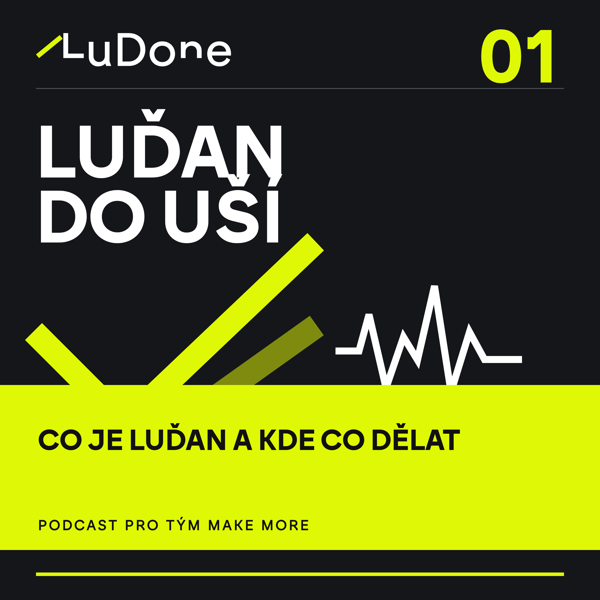
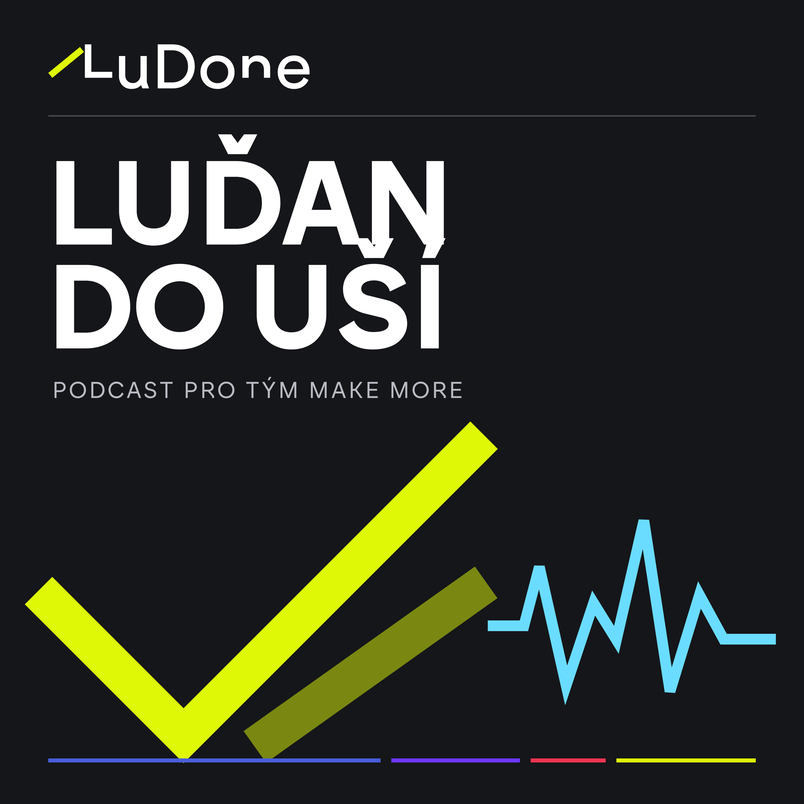
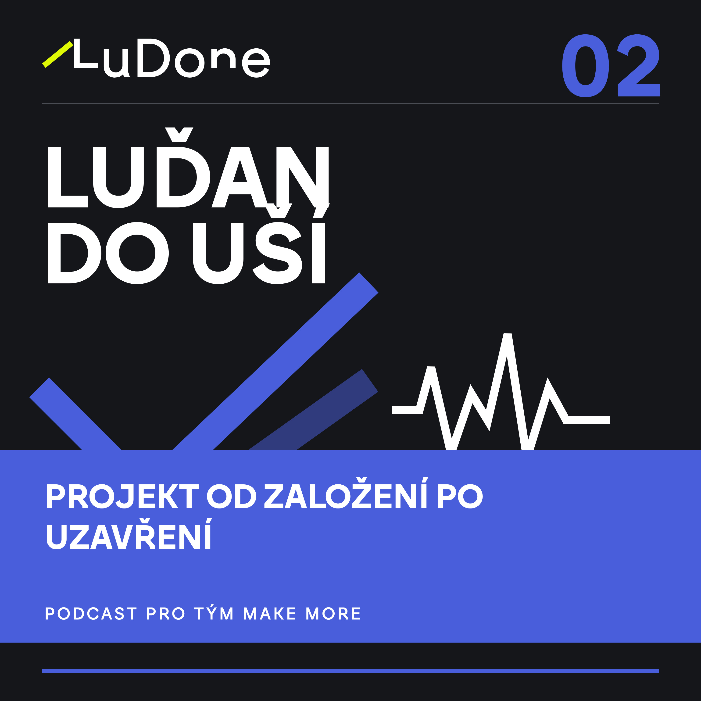
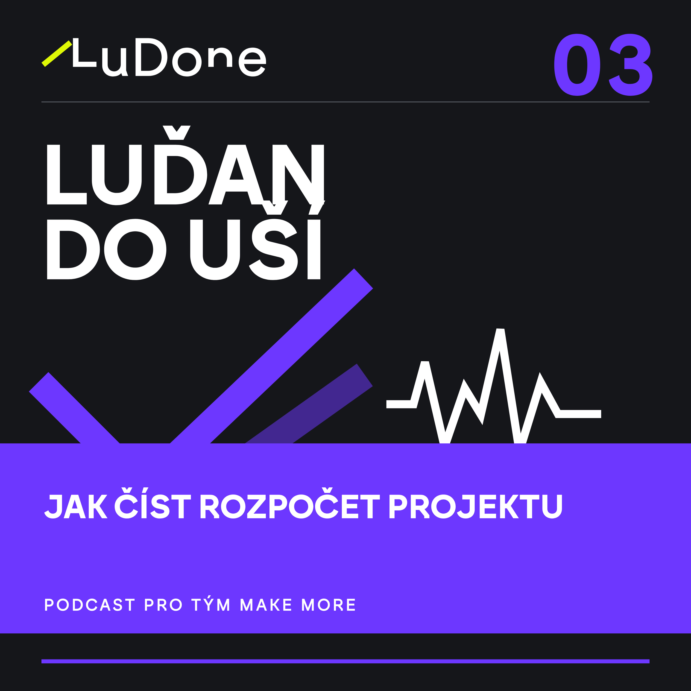
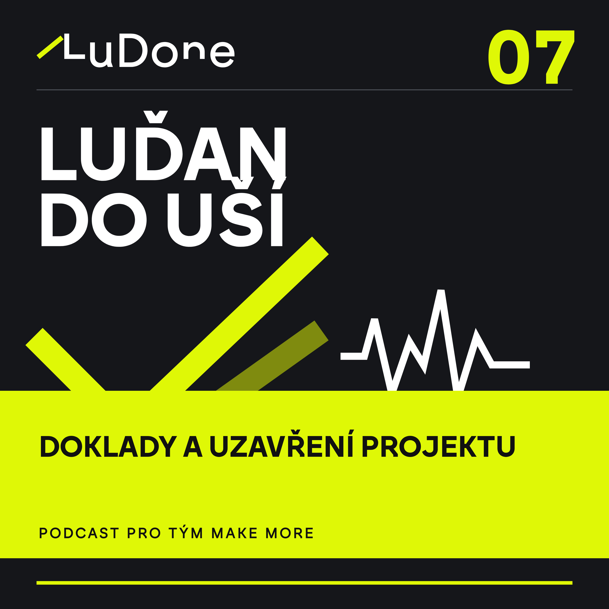
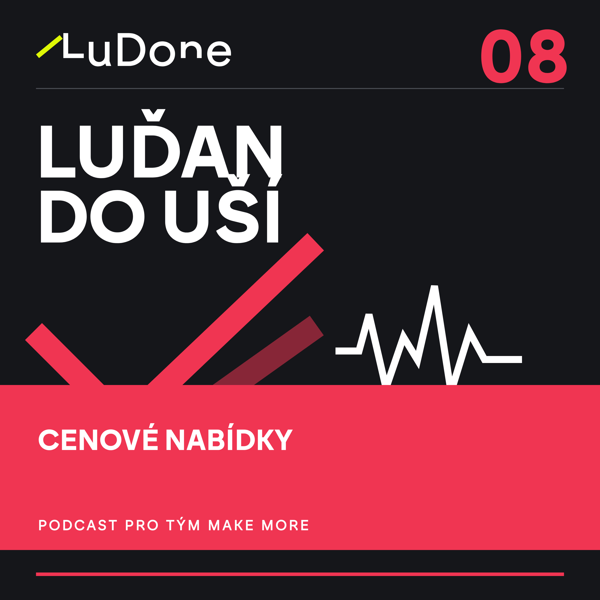

01
Co je Luďan a kde co dělat
Kde dnes Luďan žije, co se dělá na ludone.cz a co na app.ludone.cz.
4:59
Přátelský audio průvodce systémem LuDone pro tým Make more: projekty, rozpočty, doklady, čas, nabídky, sklad a práce s AI agenty.

Kde dnes Luďan žije, co se dělá na ludone.cz a co na app.ludone.cz.
4:59
Pět datumů projektu, odpovědnost vedoucího a bezpečné uzavření bez dalších skrytých nákladů.
5:28
Plán, skutečnost, reálná bilance a čerstvost dat v LuTeru.
5:46Jak vedoucí připraví budoucí ročník a co se stane až po Danově schválení a propsání.
5:00Jak změnit běžící rozpočet, vysvětlit důvod a včas řešit varování.
5:13Rozdíl mezi plánovanou kapacitou, vykázaným časem a skutečným mzdovým nákladem.
5:38
Co musí být zkontrolované po skončení akce a proč uzavření samo nezastaví LuTrack.
4:31
Klientské i interní nabídky, nákladový rozpad, krytí rozpočtem a bezpečné zaúčtování.
5:10Dostupnost v termínu akce, sety, pohyby majetku a zdroje chybějící kapacity.
5:05Odvody z realizovaných příjmů, interní nabídky a odpovědnost za nastavení projektu.
4:51Co agent vidí, co smí připravit a proč návrh není hotová změna.
4:59Praktická mapa pojmů a chyb, které nejčastěji zkreslují projekty a rozpočty.
5:56